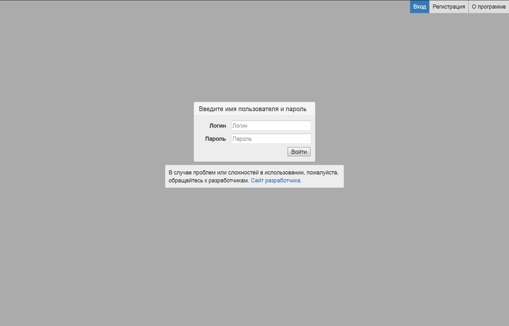
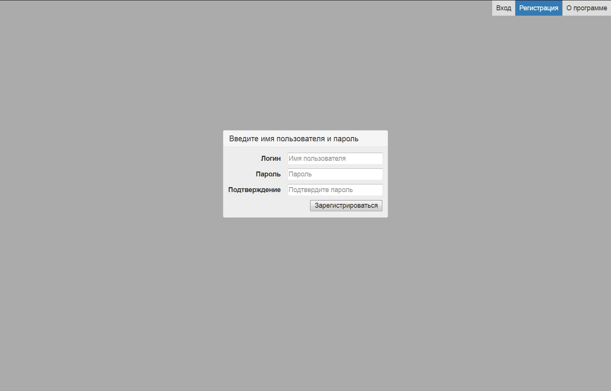

Страница входа¶
Это первая страница, которую увидит пользователь. Вход общий и для мастеров и для игроков. Вводите параметры учетной записи и жмёте кнопку Войти.

Рис. 2 Ввод логина и пароля
Вкладка Регистрация включается, только если мастера разрешат игрокам самим регистрироваться в базе заявок. На этой вкладке игрок вводит желаемый логин и пароль. Если логин не занят, то создаётся досье игрока и учётная запись игрока. С этого момента можно авторизоваться в системе введёнными логином/паролем.

Рис. 3 Регистрация игрока